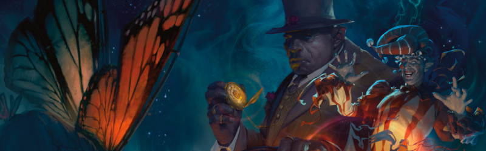
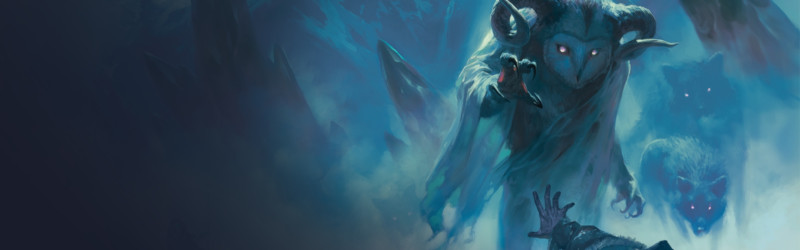
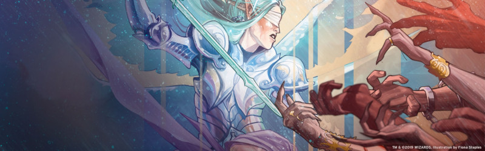
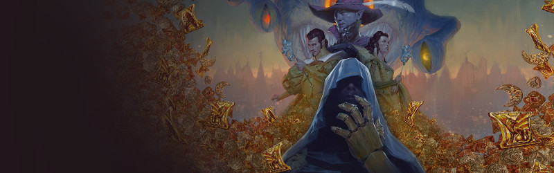
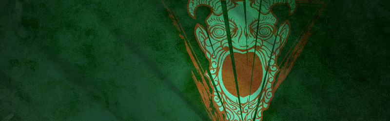
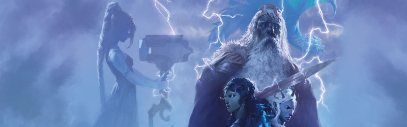
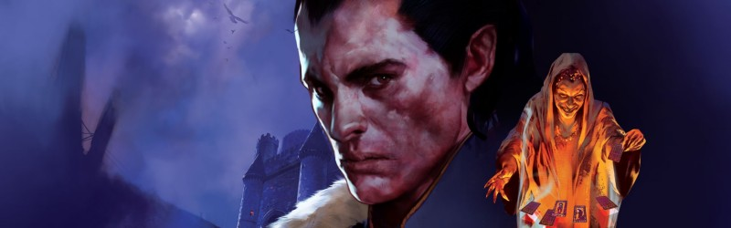
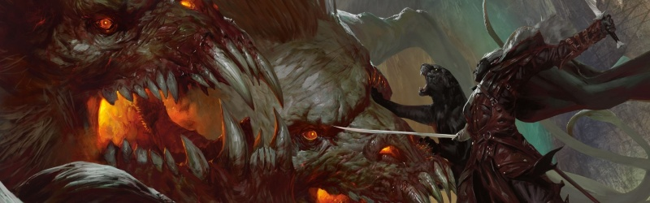
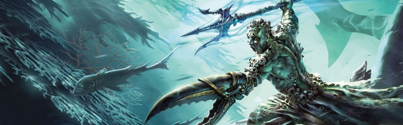
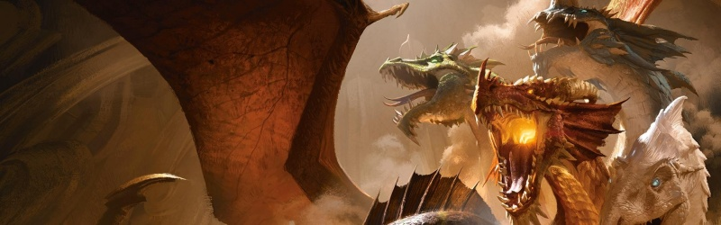

Storylines
Résumé des storylines de D&D 5 parues et à paraître.
The Wild Beyond the Witchlight (septembre 2021)
Une fois tous les huit ans, la fantastique fête foraine de Charme-Lumière débarque sur votre monde, apportant de la joie aux peuplements les uns après les autres. Ses propriétaires, Monsieur Charme et Monsieur Lumière, savent faire le show. Mais il y a plus qu'il n'y paraît dans cette extravagance magique ! La fête foraine est une passerelle vers un domaine fantastique de la Féerie qui est différent de tout ce que l'on trouve sur le plan matériel. Cependant, le passage du temps n'a pas été favorable à ce royaume, et des jours sombres se profilent... à moins que quelqu'un ne puisse contrecarrer les plans ignobles de l'assemblée du Sablier.

Icewind Dale (septembre 2020)
Au Valbise, l'aventure est un plat qui se mange froid. Sous un ciel nocturne inflexible, devant un imposant glacier, vous récitez un poème ancien et provoquez la formation d'une fissure dans la grande muraille de glace. Au-delà de cette fissure béante, les Grottes de la faim vous attendent, et derrière ce donjon glacé se trouve un secret si vieux et si terrifiant que peu osent en parler. Mais les magiciens déments de la Confrérie des arcanes aspirent, comme vous, à posséder ce que la déesse de l'hiver a si froidement conservé. Quels secrets et trésors fantastiques sont enterrés dans le cœur sans soleil du glacier ? Que signifiera leur découverte pour les habitants du Valbise ? Pourrez-vous sauver Dix-Cités de la nuit éternelle de la Vierge de Glace ?
Une histoire terrifiante qui revisite une région abandonnée et vacillante de la civilisation connue sous le nom de Dix-Cités et qui met en lumière de nombreux lieux effrayants.

Descent into Avernus (septembre 2019)
Bienvenue à la Porte de Baldur, une ville d'ambition et de corruption. Vous venez à peine de commencer votre carrière d'aventurier et vous vous retrouvez déjà impliqué dans une intrigue qui s'étend des ombres de la Porte de Baldur aux lignes de front de la Guerre de sang qui s'étend sur plusieurs plans ! Avez-vous ce qu'il faut pour retourner des machines de guerre infernales et des contrats infâmes contre l'archidiable Zariel et ses hordes diaboliques ? Pouvez-vous un jour espérer rentrer chez vous après avoir affronté le mal des Neuf Enfers ?

Waterdeep (septembre 2018)
Le célèbre explorateur Volothamp Geddarm a besoin d'aventuriers pour accomplir une petite quête. Lancés dans une folle course à travers les quartiers de Waterdeep, ils découvriront rien de moins qu'un sombre complot qui implique des personnages parmi les plus influents de la ville.

Tomb of Annihilation (septembre 2017)
Toutes les discussions dans les rues et les tavernes sont centrées sur la prétendue malédiction de la mort, une maladie ravageuse qui afflige tous ceux qui ont été ressuscités de parmi les morts. Les victimes, qui deviennent plus faibles chaque jour, se dirigent lentement vers la mort qu'elles ont évitée autrefois. Et lorsqu'elles finissent par succomber, il est impossible de les ramener à la vie, qu'elles aient ou non déjà reçu ce miracle dans le passé. Aucun savant n'est en mesure d'expliquer cette malédiction qui touche toute la région, et peut-être même le monde entier, et dont la cause est un artefact appelé le marchand d'âmes, situé quelque part au sud dans la mystérieuse péninsule de Chult, entourée de montagnes et étouffée de forêts tropicales où vivent encore de nombreux dinosaures.
→ Découvrir la ville de Port Nyanzaru au début de l'époque de Tomb of Annihilation.

Storm King's Thunder (septembre 2016)
1492. Les géants ont émergé de leurs forteresses pour venir menacer la civilisation comme jamais elle ne l'a été auparavant. Des géants des collines volent tout le grain et le bétail qu'ils peuvent pendant que des géants des pierres nettoient les villages aux alentours. Des géants du feu embrigadement les petits peuples du désert alors que les bateaux des géants du givre pillent la Côte des Épées. Même les insaisissables géants des nuages ont été aperçus, leurs merveilleuses cités flottantes apparaissant au-dessus de Waterdeep et de la Porte de Baldur. Où est donc le roi Hekaton, ce géant des tempêtes chargé de maintenir l'ordre parmi les géants ?
Les humains, les nains, les elfes et autres petites races de la Côte des Épées sont sur le point d'être écrasés sous les pieds de ces ennemis. L'unique chance de survie pour ces peuples est de travailler ensemble pour enquêter sur cette invasion et d'exploiter la puissance de la magie runique, l'arme des géants contre les dragons, leurs anciens ennemis. La seule façon pour les habitants de Faerûn de rétablir l'ordre est en effet de retourner le pouvoir des géants contre eux-mêmes.
Les puissantes runes magiques sont une pratique ancienne qui permet aux géants, et à toute autre personne qui maîtrise les runes de pouvoir, d'accorder des propriétés magiques à un objet en traçant une rune sur celui-ci. Les personnes qui utilisent les runes sont appelés des lanceurs de runes. Ces runes libèrent encore plus de puissance lorsqu'elles sont apposées sur des objets qu'il est difficile ou dangereux d'obtenir. Des objets exotiques, rares et coûteux canalisent en effet plus de magie, c'est pourquoi pour qu'une rune soit vraiment efficace, un lanceur de runes doit utiliser les os de puissants monstres, de précieux et rares trésors, et des matériaux que l'on ne trouve que dans de mortels donjons ou sur des plans extérieurs, ceci afin d'obtenir les effets les plus puissants possible d'une rune. Mais il est dangereux de travailler avec des runes. Les géants ont déjà mis en évidence nombre d'interactions entre les runes et divers objets, mais beaucoup d'autres restent à découvrir, et des résultats inattendus peuvent produire des effets catastrophiques.

Curse of Strahd (mars 2016)
Sous un ciel d'orages, la silhouette du comte vampire Strahd von Zarovich se détache des vieux murs de château Ravenloft. Alors que les grondements du tonnerre s'abattent sur les flèches du château, le vent hurlant redouble d'intensité lorsque celui-ci tourne son regard en contrebas, vers le village de Barovie. Loin au-dessous, mais à portée de sa vue perçante, un groupe d'aventuriers vient d'entrer dans son domaine. Le dur visage de Strahd libère alors un sourire, son plan se déroule comme prévu : il savait qu'ils allaient venir, et il sait pourquoi ils sont venus. Un éclair déchire les ténèbres, et Strahd a disparu. Seul le hurlement du vent remplit maintenant l'air de la nuit. Le maître de château Ravenloft reçoit à dîner ce soir. Et vous êtes ses invités.
→ Première storyline qui ne se déroule pas dans les Royaumes Oubliés.

Rage of Demons (septembre 2015)
1486. Des rumeurs d'activité démoniaque dans l'Outreterre ont atteint la surface par le biais de chuchotements et de contes feutrés emplis de violence. Le roi nain Bruenor envoie son ami Drizzt Do'Urden en mission afin de savoir ce qui se passe sous la surface, mais tout devient bien trop évident lorsque le seigneur-démon Démogorgon ravage la ville drow de Menzobarranzan. Le seigneur-cornu Baphomet joue avec ses proies dans le vaste dédale de l'Outreterre et la reine-démone des fungi Zuggtmoy envisage de se joindre à lui avec une énorme moisissure de la taille d'une ville dans une démente cérémonie de mariage. Yeenoghu, le seigneur-démon des gnolls, erre dans la nuit, générant de nouveaux rejetons gnolls à partir de ses victimes afin de poursuivre la destruction, tandis que les seigneurs-démons de la luxure et de la tromperie fondent sur les peuples velléitaires de l'Outreterre.
Dans la folie de l'obscurité, qui sera la lumière qui brillera contre les démons ? Les races des profondeurs rivalisent contre les démons, mais on trouve peu d'alliés dans l'Outreterre parmi les drows, les flagelleurs mentaux, les duergars et les gnomes des profondeurs. Drizzt Do'Urden et sa panthère magique Guenhwyvar se concentrent sur la traque de Démogorgon afin de mettre un terme à sa folie meurtrière, mais il est encore plus crucial de savoir pourquoi les seigneurs démons sont sortis des Abysses. Qui est responsable du chaos qui a été déclenché ? Le mystère doit être résolu avant que les démons n'atteignent la surface. Osez descendre !
→ Découvrir la ville de Montéloy au début de l'époque de la Colère des Démons.

Elemental Evil (mars 2015)
1491. Quatre cultes apocalyptiques du Mal Élémentaire construisent des sanctuaires et des avant-postes secrets partout dans le Nord, apportant avec eux terreur et destruction dans les Royaumes Oubliés. Chaque culte est consacré à l'un des princes du Mal Élémentaire (des entités divines incarnant l'air, la terre, le feu et l'eau) et est dirigé par un prophète nihiliste corrompu par le pouvoir. La cruelle princesse elfe Aerisi Kalinoth parle pour le culte de l'air de la Haine hurlante, tandis que Marlos Urnrayle, une féroce méduse mâle, mène le culte de la Terre noire. Le culte de la Flamme éternelle lacère ses adeptes à la demande de la belle et mortelle tieffeline Vanifer, et le marin mutilé Gar Shatterkeel prévoit de noyer le monde avec son culte de la Vague déferlante.
Les cultes utilisent des orbes de dévastation, forgées dans la puissance élémentaire brute, afin de ravager Faerûn avec d'horribles tremblements de terre, typhons, tornades et autres catastrophes. Chacun de leur côté, ces cultes constituaient déjà de terribles adversaires, mais ils ont maintenant secrètement commencé à transformer un donjon oublié depuis longtemps en un immense temple souterrain dédié à une entité étrangère connue sous le nom de l'Ancien Œil Élémentaire. Pour empêcher que cette union ne devienne une force catastrophique, des héros doivent percer les plans de ces prophètes. Les agents des cultes sont déjà partout et leur pouvoir est immense. Et lorsque vous ne savez plus en qui vous pouvez avoir confiance, la connaissance devient la seule arme.
→ Découvrir la ville de Mulmastre au début de l'époque du Mal Élémentaire.

Tyranny of Dragons (août 2014)
1489. Pendant des années, le maléfique culte du Dragon s'est consacré en vain à la création de dragons morts-vivants dans le but d'accomplir une ancienne prophétie. Cependant les cultistes se trompaient, ils avaient mal compris. Maintenant avec de nouveaux chefs à sa tête, le culte estime que la prophétie ne parle pas de dragons morts-vivants, mais d'un empire de dragons qui s'est éteint il y a plus de 25 000 ans. Et alors que Tiamat, la reine des dragons maléfiques, se morfond dans les Neuf enfers depuis des millénaires, le culte estime que le temps de son retour est venu.
Le culte a en effet un nouveau visage et une nouvelle mission. Il cherche à libérer Tiamat des Neuf enfers pour la ramener dans les Royaumes Oubliés. Mais, pour atteindre cet objectif, le culte a besoin de cinq anciens masques de dragons et du soutien de tous les dragons mauvais, où qu'ils soient. Les dirigeants du culte, les "chuchoteurs de dragons", ont alors contacté les dragons maléfiques de la Côte des Épées, et gagné leur allégeance. Associés au culte, les dragons maléfiques cherchent maintenant à amasser un trésor digne de leur sombre reine, non pas en pillant leurs propres trésors (bien sûr), mais en volant l'argent de villes, des caravanes, des dragons bons, des navires marchands et d'autres sources. Et cette chasse aux trésors vorace entraîne le chaos sur la Côte des Épées. Neverwinter, Waterdeep, la Porte de Baldur, aucune ville n'est à l'abri de leurs déprédations. La situation est désastreuse.
Mais la Côte des Épées n'est toutefois pas sans défense. De puissantes factions sont prêtes à se lever et à mettre fin à la tyrannie des dragons. Les aventuriers des royaumes doivent unir leurs forces pour faire face à Tiamat, détruire le culte du Dragon, et prévenir l'émergence d'un nouvel empire de dragons. Les Ménestrels ont partagé leurs informations avec d'autres factions, et pour lutter contre le culte du Dragon, Lord Dagult Neverember de Neverwinter propose que des aventuriers représentant chacune des cinq factions soient envoyés au nord afin d'enquêter et faire rapport le plus rapidement possible. L'avenir est entre leurs mains.
→ Découvrir la ville de Phlan au début de l'époque de la Tyrannie des Dragons.
